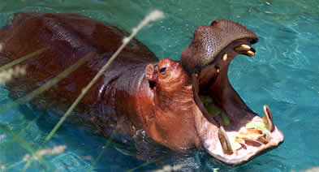

Slideshow with images


Slideshow with images in a div with play and pause buttons (current slide not specified)
Slideshow individual slide links and next and prev (starting on the 3rd slide)
Manual Slideshow Events
Manual Slideshow listening for events
Images courtesy of Jim Knox's Wild Zoofari